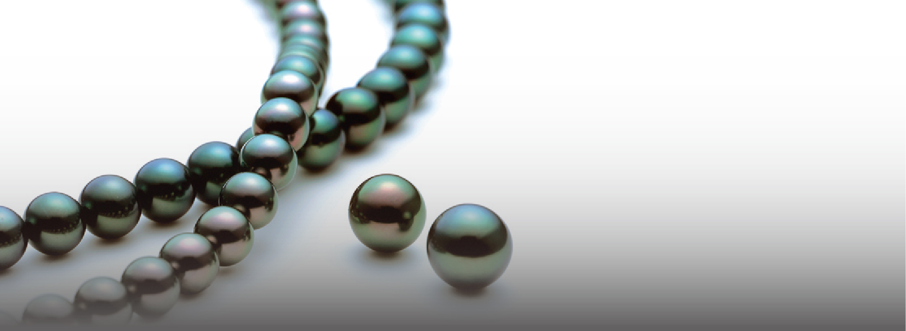

真珠の知識・メンテナンス 真珠の種類や品質評価項目について解説
主な品質評価項目
形
形においては真円（パーフェクトラウンド）に近い物ほど産出量が少なく希少性が高いため、評価が最も高くなり
価値があるとされます。また、変形とされる形においても特にシロチョウ真珠に見られるティアドロップシェイプと呼ばれる
整った涙型の形をした真珠も生産数の希少性から、評価が高くなります。
キズ
真珠の表面に見られるへこみや突起、シワなどを「自然キズ」と呼びます。真珠のポツンとしたへこみはエクボと
例えられ多くの消費者様も一度は耳にしたことがあるとは思います。また、養殖後に行われる様々な加工や処理途中に
出来るキズを「加工キズ」と呼びます。品質評価ではキズが少なく艶やかな珠になればなるほど、評価は高く希少性の高い
品となります。品質評価ではキズの数、位置、大きさ、キズの種類を見極め評価されます。
色
真珠の色の品質評価は各真珠の種類によっても大きく異なります。各真珠の種類の中でも、産出量が極めて少なく
稀少とされる色が高く評価される傾向や時代のニーズなどによっても評価が変わる傾向があり、流動的な評価となります。
マキ
真珠の「マキ」とは真珠層がどのように・どのくらいの厚さで形成されているかを示します。質の良いキメの細かい真珠層に
よって形成された真珠には、真珠の内部から発する深い輝きがご覧いただけます。例え、マキの厚さが良くてもテリの無い真珠は、
真珠層の質が影響を与えているためです。そのため、マキの評価の高い真珠とは質の良い真珠層によって形成され、真珠の内部
に深い光沢を持つ珠となります。マキの評価は熟練の目が必要となる要素です。
テリ
テリとは真珠の持つ光沢や輝きを示します。前述したようにマキの良い真珠には真珠の内部に特有の干渉色をご覧頂くことが
できます。干渉色は光の屈折や透過によって見える色であり、マキと密接な関係があります。テリの評価が高い商品は【マキ】と同様、
質の良い真珠層によって形成されていることが条件となり、真珠内部に強い干渉色が見える珠を示します。
サイズ
サイズは真珠の品質要素ではありませんが、価格や希少性において重要な要素となります。珠のサイズが大きくなればなるほど
産出量が減少していき希少性も増す点から評価が高くなります。